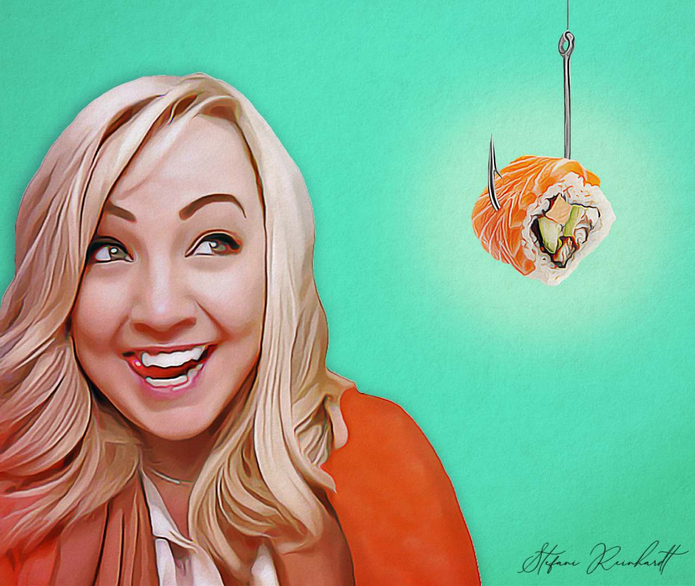

Sophie White had always loved her cluttered office with its stacks of tattered books, and collection of
wall clocks. It was a place where she felt completely at ease.
Though she was a recluse of a woman, she was held in high regard by her close friends who trusted
her with all their secrets. She preferred red wine and charcuterie to a traditional supper as she almost
always had her evening meals in the seclusion of her home office. The warn leather of the great
armchair that flanked her wooden desk shaped perfectly to her backside after years of use. She never
married which suited her just fine. Wifely duties only served to distract her from her true passion.
Writing. Sure, there were nights when she thought the loneliness would swallow her whole. But she
reminded herself of all she achieved and potentially would not have had she stayed with the only man
that ever tempted her. She thought Chase Taylor was that person for her. But her strong will
ultimately pushed him away in the end.
Sophie walked over to the window and reflected on her past. The rain hammered against the glass.
A movement across the street caught her eye. She tried to focus on the object through the sheen of
wet. She locked on something in the distance, or rather someone. Her breath caught in her throat
and her blue eyes widened. It was the figure of Chase Taylor. Was her mind playing tricks on her?
Chase was a strong man with a lean physique and piercing green eyes.
Sophie gulped.
She was not prepared for Chase.
Stepping away from the window, she headed for the front door. As Sophie stepped outside and Chase
came closer, she could see the vulnerability in his expression.
Chase looked down at her with an adoring gaze that for some odd reason reminded Sophie of her
childhood dog and how he would look at her when she came home from school. He said, in hushed
tones, "I’ve missed you, Soph.”
Sophie gaped back, more anxious than she thought possible at this age. The cold rain dampened her
cheeks and sobered her to finally speak. “Chase, what are you doing here,” she replied.
He let out a breath and said, “I realized something yesterday. I realized I met the love of my life when
I was just a boy, at a time when I wasn’t old enough to understand what that meant. I’m here because
once I realized that person was you, I couldn’t imagine spending another moment without you.”
They stared at each other with a strange sense of familiarity. It had been years since they’d spoken
last, yet Sophie felt like no time had passed at all. They were still just two kids, swaying to the sound
of his mother’s Miles Davis records in the attic of his house. Sophie regarded Chase thoughtfully.
"I feel the same way."
The smile that he bestowed upon her had Sophie smiling back giddily. She blinked past the rain and
found his lips on hers in an instant. They went inside and Sophie poured them each a glass of red wine.
THE END
Below are some examples of my work:
Click here to visit my third page.